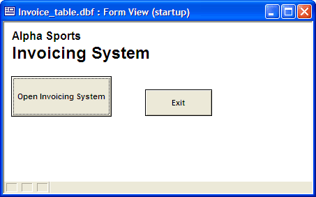
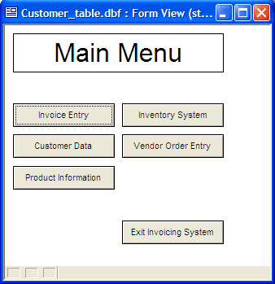

Startup Form Design Examples
While there are no limitations to which form is the Startup Form, often the Startup Form is designed specifically to introduce your application, present a main menu, or limit access to the rest of the application by means of a password-protected button.
In the following Form, the application's name is prominently displayed, and the user must press a button to get to the rest of the application. By placing a password on this button, you can limit access to only those users who know the password.

Example Startup Form
Another common type of Startup Form is a main menu. In the following form, most of the application's functionality can be accessed from one centralized location.

Example Startup Form